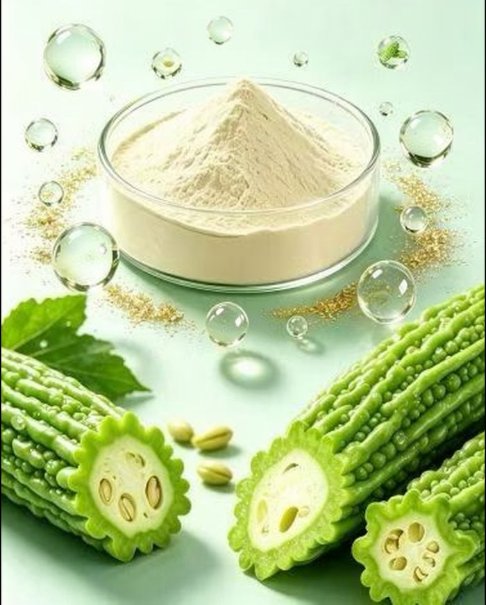

Bitter melon (Momordica charantia) has been used for centuries across Asia as a food and as a bitter tonic. In the last decade it has also become one of the most requested botanical ingredients in the blood-sugar-support category — and increasingly, buyers are asking not for the classic powdered extract, but for bitter melon peptide powder.
This article explains what the peptide form actually is, what the "75%" on a specification sheet means, where it fits in finished products, and what documentation a serious supplier should put next to every batch.

Traditional bitter melon extract is made by drying and extracting the fruit, then standardising to markers such as total flavonoids or charantin. The peptide version takes a different route: fresh, specially cultivated bitter melon fruit is pulped, and its naturally occurring proteins are broken down into short chains of amino acids using controlled enzymatic hydrolysis.
The result is a pale, free-flowing powder that is substantially protein in nature. A typical commercial grade specifies:
Because the material is protein-derived and water-dispersible, it behaves differently in a blend than a fibrous fruit extract: it disperses more cleanly, carries less plant sediment, and fits formats such as sachets, sticks and tablets better.
Bitter melon's traditional reputation is linked to several naturally occurring compounds found in the fruit:
An enzymatic peptide process preserves this compound profile while converting the fruit's protein content into a form that is easier to formulate with. That combination — traditional botanical plus modern protein chemistry — is why the peptide grade has become the premium option in this category.
As with every botanical ingredient, the headline figure is meaningless without the method behind it. Before comparing two bitter melon peptide quotations, ask each supplier to state:
Two powders can both say "75%" and still be different products. The supplier who can explain their own numbers without hesitation is usually the one who measured them.
Bitter melon peptide powder is used in:
Because the material is mildly bitter by nature, taste-masking or encapsulation is worth discussing with your formulator early — and worth asking the supplier whether they offer a coated or granulated version.
This category carries regulatory sensitivity. In most markets, including the United States, a finished product may carry structure/function language ("supports healthy glucose metabolism already within the normal range") but must not make disease-treatment claims. The ingredient supplier's job is to give you clean, truthful technical documentation so that your regulatory team can write compliant label copy. Be cautious with any supplier who hands you marketing claims that promise to "lower blood sugar" or "replace medication" — that language creates risk for your brand, not theirs.
The documentation discipline for this ingredient is the same as for any botanical extract we supply:
| Document | Why it matters |
|---|---|
| Batch-specific Certificate of Analysis | Peptide assay, protein, moisture, micro and heavy metals for your lot |
| Specification sheet | The agreed targets, methods and retest periods in writing |
| MSDS / SDS | Handling, transport and your EHS file |
| Allergen & non-GMO statements | Frequently requested by U.S. retailers |
| Pre-shipment sample | Drawn from the actual production lot, not a retained older lot |
For the full evaluation framework — including the three questions that separate serious suppliers from price-quoters — see our earlier article, How to evaluate a botanical extract supplier.
What is the minimum order quantity?
We supply bitter melon peptide from 1 kg for trial and R&D batches, with production quantities priced against volume. A first order small enough to test is always better than a first order large enough to regret.
Can you supply a sample before we commit?
Yes — a sample drawn from a production lot, with the matching batch COA attached. We would rather you test the real material than a hand-prepared demonstration batch.
Do you offer OEM finished formats?
Yes. Capsules, blends and private-label formats are available; tell us the dosage form and market and we will confirm what is practical before quoting.
Ask for the full specification sheet and a sample COA. A real reply from the person who handles your order — usually within one working day.
Tell us the product, specification and quantity — quotation with lead time and documentation list within one business day.